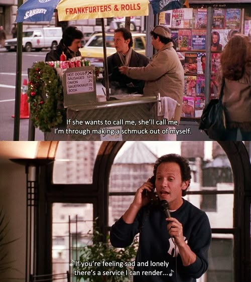
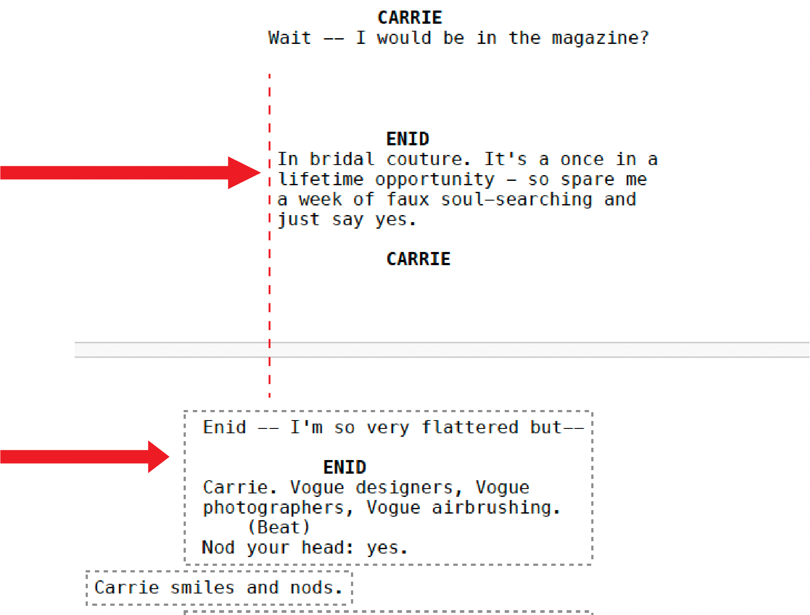
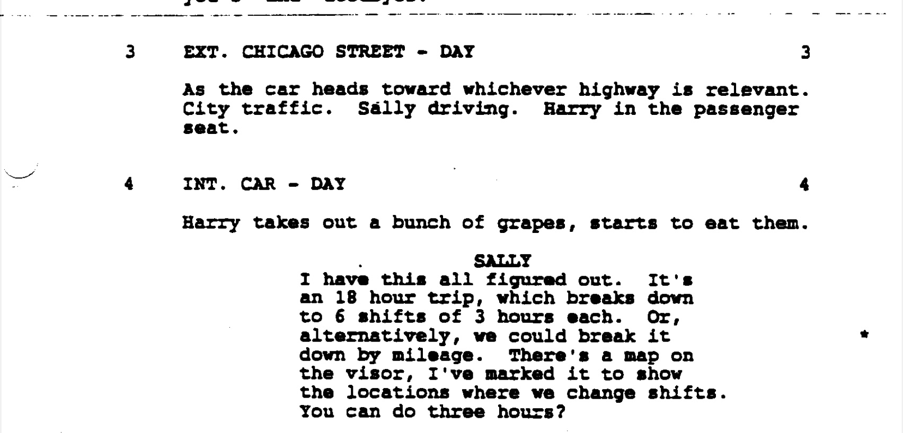
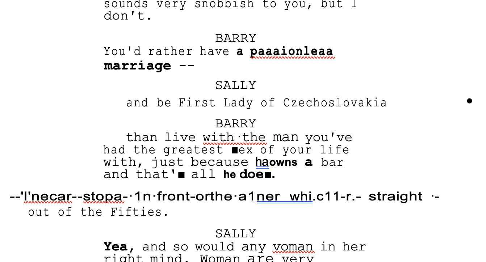
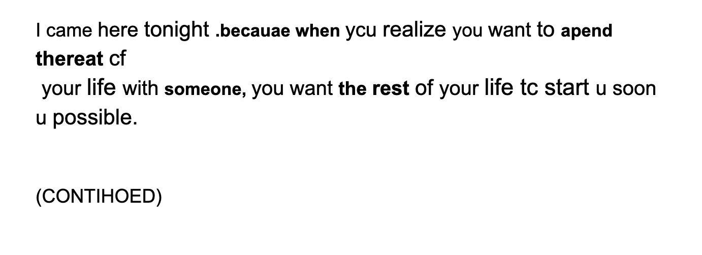
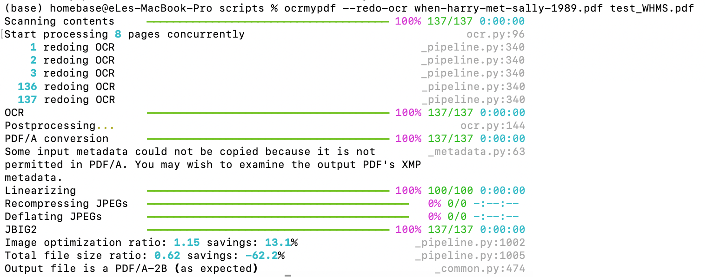
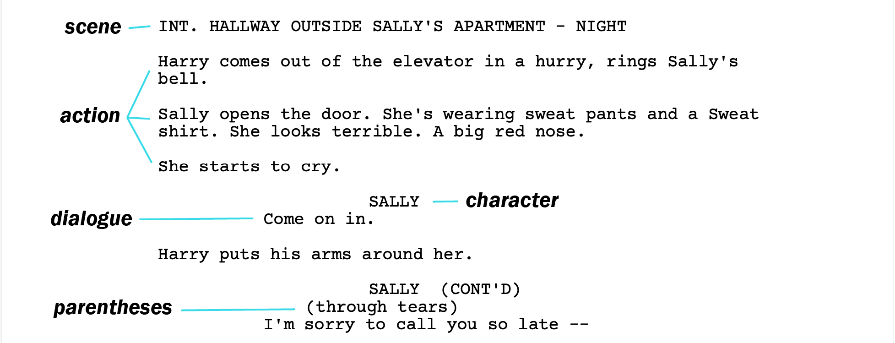
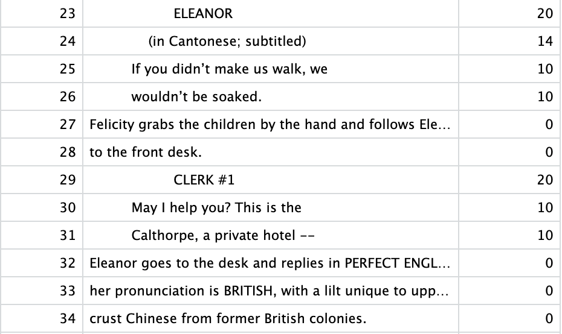
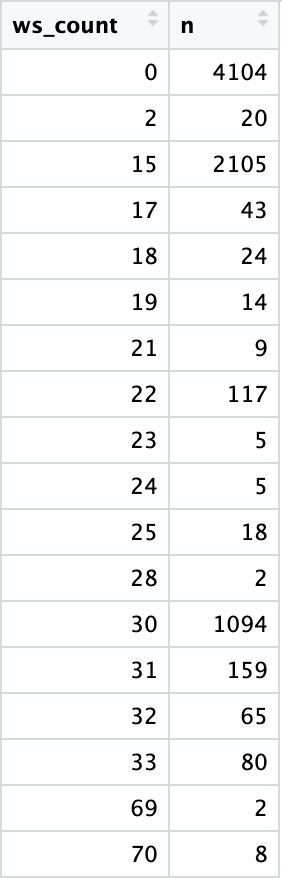
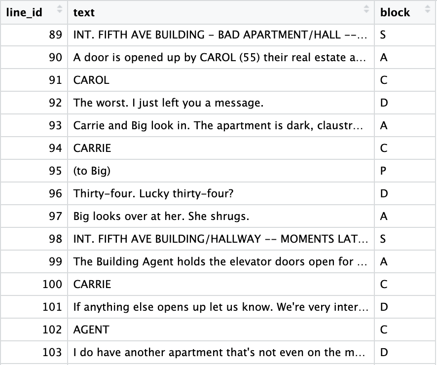

Girl is a magazine editor in a big city (probably New York). Boy works a nondescript office job for a big
firm. They have a fateful meet-cute, maybe they bump into each
other on a crowded sidewalk or get set
up by friends and instantly clash, and of course engage in playful banter. Sparks fly. Then, inevitably,
something goes wrong: a lie, a misunderstanding, or a fear of commitment. Cue the dramatic montage. But just
when all hope seems lost, boy has a revelation, makes a grand gesture, and they reunite for a happy ending.
Sound familiar?
How to Lose a Guy in 10
Days
Were 2000's rom-coms really all like this or do we just joke about them? For many, these films help form
early
notions of romance, dating, and gender roles within relationships. This project explores how modern romantic
comedies depict romance and gender dynamics, and how those portrayals may shape viewers’ real-life
perceptions of love—particularly among girls and women,
who are often the target audience of rom-coms. Personally, I was raised in a traditional, conservative
household, yet I hold fairly contrasting opinions on relationships, marriage, and gender roles to my
parents, which I suspect is partially due to the American values and norms I was exposed to through 2000's
rom-coms. By analyzing the stories that rom-coms tell, I aim to better
understand the lasting impact that these lighthearted films can have on how we approach modern romance.
Background
What is a modern rom-com?
“Neo-traditional” romantic comedies became recognized after When Harry Met Sally came out in 1989 (nominated for
best original
screenplay at the Oscars). Many describe the era of modern rom-coms as having started in the 1980s, with
Oscar-winning films Moonstruck and
When Harry Met Sally, and continue into the present, with Crazy Rich Asians and Anyone But
You (though some also claim that the genre died after 2013)
(Asmelash,
CNN).
Romantic comedies, or rom-coms, have long held a unique place in film, balancing humor with
heartfelt storytelling about love and relationships. The genre's roots trace back to the comedic and
romantic pursuits featured in Shakespeare’s plays and other literary classics, some of which modern rom-coms
are adapted from, such as 10 Things I Hate About You (loosely based on Taming of the Shrew),
Clueless (loosely based on Jane Austen's Emma), and She's the Man (loosely inspired by
Twelfth Night) (Asmelash,
CNN). The rom-com genre evolved over time, creating more leading roles for women in film and
telling more nuanced women's stories. However, many rom-coms still continue to reflect and reinforce
problematic gender dynamics. Men are often
portrayed as the ones expected to take action or make grand gestures, while women, even those depicted as
strong and independent, are still passive in their romantic life. Despite their successes, these women are ultimately left unfulfilled
without romantic validation and end up waiting for the man to make a move and proclaim his love.

Harry trying to get Sally to
forgive him
in When Harry Met Sally
These stereotypical gender roles reflect the postfeminist era of rom-coms (roughly 2005–2011), during which
Chloe Angyal, a postdoctoral scholar, argues
feminist ideals were repackaged in a way that seemingly empowered women while simultaneously undercutting
their agency. She poses the argument in her thesis on
postfeminist romantic comedies that these films often perpetuate gender norms under the guise of
modernity ("deceptively
backward"),
using tropes like the “strong woman who still needs a man” or "a makeover for empowerment that aligns with
strict beauty standards" to reinforce traditional expectations. Ela Igrec, in their graduate thesis on
gender roles in romantic comedies, identifies certain traits depicted in rom-coms that are feminine
vs. masculine. Some feminine traits include showing emotions, asking for advice, and wanting true love,
while masculine traits serve as a sharp contrast, including being unemotional, giving advice, and being more
interested in sex/one-night stands. However, it is interesting that despite this unemotional association,
Igrec found that the most repeated emotion for men was initiating the first kiss and telling their
partners "I love you" first, behaviors that require significant emotional vulnerability.
Based on these widely recognized stereotypes and gendered tropes, I have selected a few to investigate,
including movie settings, who says "I love you" first and how love is more broadly expressed in these films, and additional
exploratory textual analysis.
Methodology
2 main data sources:
Top 100 highest grossing domestic romantic comedies from IMDBPro
Using the top 50 movies from the top 100 highest grossing movies list, I manually collected movie settings using Wikipedia, IMDb, and other online sources. For movies that had key
settings in more than one place, I duplicated the row with the movie such that there were two entries with
two different locations. For fictional towns, I either tried to find the town it was based on or the actual
filming location if it was close to the fictional town setting. Additionally, some films had multiple
different settings, so I selected the setting(s) that were the most prominent and/or relevant to the story
itself.
Snippet of top 50 rom-coms dataset
After finding all the locations for the top 50 movies, I uploaded the dataset to Geoapify, an online geocoding tool, to
retrieve
the latitude and longitude for each location. Additionally, I linked the movie posters from Wikipedia to
make the movies
more visually recognizable.
Scripts
Finding the data
When searching online for scripts, I tried to find ones for movies I’ve personally watched so I could roughly
verify if they seemed accurate. For example, the version of The Proposal on the IMDb script database was
clearly an earlier draft since the main male lead didn’t even have the correct name.
Most scripts were just over 100 pages and each one turned out to be messier and more inconsistent than I
expected, so I reduced my sample size since each script would now take more time to clean. I ended up
picking four movies that I’d seen and that had some influence on me. I was a bit bummed that some of the
classics didn’t have available or accurate
scripts, like Clueless, The Proposal, 27 Dresses, How to Lose a Guy in 10 Days, and 13 Going on
30.
Cleaning the PDFs was tricky—editing them directly in Word or PDF editors didn’t give the control or
consistency I needed to preserve screenplay formatting. I first tried cleaning the PDFs in Adobe Acrobat to
make them easier for R to read, but it didn’t work very well. Text was randomly grouped into boxes and
were sort of free-floating on the page.

Editing a screenplay PDF using Adobe Acrobat
For scanned PDF documents, I tried various online OCR tools to clean up the file and make it accurate and
readable.

Excerpt from original When Harry Met Sally
pdf

OCR export to .docx file type

OCR export to .pdf file type
I ultimately discovered OCRmyPDF and tried performing the
OCR myself rather than using another existing online OCR tool, which performed much better.

OCRmyPDF
Structuring the data
In terms of structuring the data, I’m most comfortable working in R and was interested in learning more
about text mining with R. I remembered a data journalism article I read
a while ago that recommended the Text Mining with R
book (which
is free online!), so I followed the tidytext approach to set up the scripts. To categorize text into
meaningful blocks, I looked at examples from other textual analysis projects, like using chapters to divide
novels.
Unfortunately, standard approaches didn’t quite apply due to the unique formatting of screenplays.
For example, some of the scripts I started working with: 10 Things I Hate About You, Sex and
the City,
and Crazy Rich Asians, didn’t have clear scene markings like “Scene 1.”, so I couldn't directly
apply the chapter organization to scenes. Instead, I settled for the
next best approximations, the INT. and EXT. headings, which mark location and signal a scene change.
Below is an example of the different components of a screenplay:

Example of screenplay component structure from
When Harry Met Sally
Within scenes, I tried to categorize lines using a variety of regex rules based on my observations:
Character names appear in all caps before dialogue.
Dialogue appears after the character name.
Narrative action describes what’s happening in the scene when there’s no dialogue.
Other directions show up too, like (CONTINUED:), (MUSIC FADE IN), or (SUPERIMPOSE: LONDON).
However, I soon discovered that it wasn't as simple as matching all-caps; there were a wide range of
variations
like CARRIE (V.O.), NICK (CONT’D), CLERK #1, and (O.S.).
Due to vast exceptions and formatting quirks, my initial approach using pdftools and regex to extract
everything broke down quickly.
For example, Crazy Rich Asians has narrative lines with random
capitalized words, and characters speaking in different languages often had extra tags like “(in Mandarin;
subtitled),” which broke assumptions like “text after a character name = dialogue.” Additionally, some
scripts had extra scene numbers, like Sex and the City, but since these were inconsistent (and
usually redundant with INT./EXT.), I decided to remove scene numbers entirely for consistency across
scripts. Some scripts,
like Crazy Rich Asians, also had unconventional formatting (e.g. there’s a scene with a flurry of text
messages and heavier usage of dual
dialogue, making which made parsing more complex).
So I went back to the basics: how do humans visually read scripts and identify all these different
components?
Through indentation and line breaks.
Character names and their dialogue are often centered, while scene headings and action lines are not. I
checked if the raw data preserved the whitespace in R,
and it luckily, it did! So, I started counting the number of leading spaces to help distinguish block types,
which then made the
regex rules much more effective.
I eventually found WriterSolo, a free screenplay
editing program, which had preset tools to help with screenplay indentation and toggle options for features like page numbers and scene numbers to easily add/remove them
entirely from the whole document. It also automatically added tags like (CONT’D) where needed and was
overall incredibly effective for cleaning the scripts.
WriterSolo toolbar
Here’s the basic structure I worked toward:
Scene headings: typically marked by INT. or EXT.
Action
Character
Parentheses
Dialogue
In the end, it was a mix of manually cleaning scripts using WriterSolo and writing rules based on
indentation and formatting patterns. Along the way, I tried to visually verify the outputs as much as
possible.
I also had to set different whitespace thresholds for each script, despite using WriterSolo with preset
indentation for different text types. I found all the leading whitespace counts for each script, checked
what kinds of blocks (text types) were present within each whitespace range, and then applied regex rules accordingly.

Counting leading whitespace in Crazy Rich Asians

Whitespace count for an entire script
This approach
allowed me isolate certain groups of blocks first by whitespace (the way we would naturally read the
script), making distinctions between blocks with similar characteristics (e.g. action vs. dialogue) much
easier since they had different leading whitespace and were not included in the same groups.
Whitespace ranges with their classifications
Once every line had been assigned a block categorization, I collapsed the adjacent lines into one block (i.e.
multiple lines of adjacent
dialogue are joined into one row). Below is an example of the cleaned data structure:

Example of cleaned Sex and The City
tibble
Movie Settings: where do we find love?
Many rom-coms seem to suggest that love is found in a big city, where there's
more opportunity to find
a soulmate (bigger pond, more fish, right?). But why are cities like New York and Paris so heavily
associated with romance? While I never internalized this concept as a personal must-have (I
didn't have any particular expectations when I moved to Los Angeles), these films still planted a subtle
association in
my mind between love and the American Dream. Just as big cities are seen as beacons of economic opportunity,
they also seem to promise romantic possibility and the American ideal of having it all: career, success,
and love.
There also seems to be something enticing about the idea of a chance encounter in a busy crowd, bumping into a
stranger on the subway or locking eyes across a café. Perhaps it’s the hustle and bustle of a big
city that makes two people finding each other feel that much more special.
So, are most modern rom-coms really set in big cities, or is that just something we’ve come to assume?
settings of top 50 highest grossing u.s. romantic comedies
Drag and zoom on the map to explore! Hover over a point or arc to see popular rom-com settings.
top 6 most common settings
Unsurprisingly, a vast majority of the top 50 highest grossing movies took place in New York (nearly half!).
Only the top 6 locations were included in this graph since all other locations only had one occurence. Safe
to say that rom-coms had at least some influence on tying large, metropolitan cities to love,
romance, and opportunity. In my opinion, I feel like New York and Paris are the cities most heavily
associated with romance, yet Paris doesn't show up in these rom-coms. It does show up in the next 50 movies
(like in
Midnight in Paris), but is largely not represented as a setting in U.S. rom-coms, so its connection
to love is likely derived from other forms or eras of media.
Scripts
I initially started this project wanting to examine who says "I love you" first in rom-coms (the man or the
woman), to see if that was an expectation reinforced/exemplified in this genre. To begin, I first looked at
instances of "love" or its variants in the script using this regex rule:
This rules finds the following words: love, loved, loves, loving
In Sex and The City, the word "love" and its variations appear 70 times!
Now, to look at who says it...
The speakers of "love" were mostly women in Sex and The City (this could potentially be attributed to
the fact that women had the majority of lines in this movie).
Once I changed the regex to "I love," the number drastically dropped to 9
occurences, and within those 9, 4
of them are about things. The 5 occurences of "I love" directed towards a person were Miranda to Carrie (1),
Steve to Miranda (1), and then Samanta to Smith (3). The key resolution of the film, the relationship
between Carrie and Big, was done through love letters and didn't actually use the words "I love you" in some
form.
While this approach of counting word frequencies is interesting, I wanted to try capturing a bit more
information.
The lines below represent the length of each script based on how I've structured them (with the total number of lines at the bottom).
The points along each line represent instances of characters (primarily main characters) expressing their
love for someone else. The toggle in the top left hides all the lines that are not directly between main
characters in a romantic manner. To see the actual line of dialogue, hover over the icon.
Hide interactions not romantically or directly between main
characters
10 Things I Hate About You actually didn't have any instances of characters directly expressing love
to one another, which makes some sense given that it is film about teenagers just starting their relationships. While I expected most of the occurences of expressions of love to take place near the end of the
movie (closer to the bottom of the vertical lines), it was actually fairly spread out. However, when the toggle is
activated, there is consistently a love confession at the end of the movie (all by the men first).
For more broad textual analysis, I also found the most commonly used words in dialogue by sex, only using
the main characters (determined by how many lines they had, which varied by script).
most frequent words spoken by sex
Common shared high-frequency words include "love," "sex," and "feel," which I didn't expect. Given rom-com
tropes, I assumed "love" would be a more female-dominant word, while "sex" would
be more male-dominant. However, since I am working with only 4 scripts, it is relatively easy to guess
where the word usage comes from. For instance, male usage of "sex" can be like attributed to Harry from
When Harry Met
Sally and Steve from Sex and The City, while female usage can be attributed to most of the
female characters in Sex and The City.
The frequencies between shared words are fairly comparable. Some words, like "friends" and "sex" saw slightly higher frequencies in male speakers, and words like "day"
and "home" saw higher frequencies in female speakers. The unique words reveal some disinctions between the
sexes, with females more frequently saying things like "married," "family," and "wedding" and males more
frequently saying "date," "attractive," and "baby." The unique words seem to align with the gender roles and
traits previously discussed, where women are more interested in finding true love and starting a family,
while men are more interested in casual dating and sex.
Reflection
A major limitation with this project was the number of rom-com scripts I was able to find and clean. Since
the process was rather intensive, the findings are not particularly representative of the modern rom-com
genre as a whole as I had originally intended (though I tried to select one film from every decade).
With more time, I would've loved to analyze the scripts using bigrams and trigrams, and explore topics like
infidelity, casual sex, and apologies. Another approach I would've liked to explore would be using Natural
Language Processing (NLP) to conduct more extensive textual analysis, like sentiment analysis and finding
the grand love "confession" at the end of the movie beyond just searching for the word "love."
Overall, I learned copious new techniques and tools through this project, and I have a newfound appreciation
for rom-coms through conducting my literature review. It's easy to write off the rom-com genre as cliché,
unrealistic, and reinforcing outdated gender roles, but I still find that there is still a lot of value that
comes from these films.
Admittedly, a widely recognized criticism of romantic comedies is their overwhemlingly white,
heternormative, and
formulaic stories, and as such the genre is dismissed as predictable and culturally shallow. Yet, as Kyle
Stevens argues in his article about romantic
comedies from a film analysis perspective, the very
predictability of rom-coms can be a virtue, offering comfort, structure, and space for emotional
engagement. Similarly, Celestino Deleyto, a scholar of film and media, points out in his
article on desire and space in contemporary film, that romantic comedies,
despite their conventions, reflect and negotiate contemporary social desires and tensions. Rather than
dismissing the genre outright, it’s worth considering how these films can both reinforce and challenge
cultural norms, and how watching them critically can spark meaningful reflection on love, identity, and
representation. I encourage everyone, rom-com fans or not, to engage with media and the world around them in this manner, with a
critical yet open mind.